Project 1: Rasterizer
Overview
Throughout
the project, we successfully implemented triangle rasterization, antialiasing
by supersampling, transform, barycentric interpolation, pixel sampling,
and level sampling with mipmaps. First, we developed a 2D image rasterizer that
rasterizes images based on the provided SVG files. Antialiasing is then
supported to ensure a smoother color transition by reducing jagged edges.
Additionally, transform is implemented to create robots with distinct
activities. We then used mipmap and bilinear pixel sampling to allow images to
retain their quality when shrunk or enlarged.
This is
an extremely interesting project to us! This project allows us to
turn theories learnt in class into applications. It teaches me more about
rasterizing images and antialiasing, as well as knowledge about methods that
interpolate screen pixels.
Task 1: Drawing Single-Color
Triangles
Steps taken in order to rasterize triangles:
1. By
checking if the cross product of (p2-p0,
p1-p0).z is less than 0, we ensure that those
three vertices are in clockwise order
2. Calculate
three lines using the three given points (p1,
p2, p3)
3. Find
the normal for those three lines (e.g. for l0’s normal, we created a new
Vector n0(-l0.y, l0.x, 0))
4. Compute
the bounding box (x_min, x_max, y_min, y_max) using the three given points (p1,
p2, p3)
5. Loop
through each pixel inside the bounding box (from the x_min to x_max and from y_min to y_max )
6. In each
iteration, we performed three line tests (dot(p
- p1, n0) >= 0 && dot(p - p2, n1) >= 0 && dot(p - p0, n2)
>= 0) to determine if the pixel is inside the triangle
7. Fill in
that pixel if condition is met
This
algorithm checks each sample within the bounding box of the triangle. No
special optimizations have been implemented.
Show a png screenshot of basic/test4.svg with the
default viewing parameters and with the pixel inspector centered on an
interesting part of the scene:
Task 2: Antialiasing
by Supersampling
Supersampling algorithm and modifications to the
rasterization pipeline:
For managing supersample buffer memory:
1. set_sample_rate():
resizes sample_buffer by (width
* height * rate) and sample_rate is set
to the given parameter.
2. set_framebuffer_target(): width, height,
and rgb_framebuffer_target are set to the given parameters, and
the sample_buffer is resized by (width
* height * sample_rate)
3. clear_buffers(): fill the framebuffer with Color::White
To implement triangle supersampling:
rasterize_triangle():
1. RasterizerImp::rasterize triangle() rasterizes triangles that are higher resolution,
then downsamples the higher resolution traingles to the
output resolution of the framebuffer
2. x_min, x_max, y_min,
and y_max are multiplied by sqrt(sample
rate) to obtain the correct bounding box
3. the center coordinates of newly supersampled pixels
must be recalculated. The coordinates are then needed to be tested if
those supersampled pixels are inside the triangles. As a result, we
need to transform the extended sample buffer index coordinate to the original
triangle point by dividing sqrt(sample
rate)
4. After obtaining the updated vectors, the point-in-triangle test
is performed.
fill_pixel(): avoids supersampling for
lines and points by filling the sample_buffer with the same color.
For resolving supersamples to framebuffer:
resolve_to_framebuffer():
responsible for calculating the average of all supersample data points
when filling the target framebuffer pixels from
the supersample buffer data.
Why is supersampling useful?
Supersampling is beneficial because it increases picture
quality by minimizing jagged edges and enhancing the overall smoothness of an
image. This is accomplished by producing the picture at a higher resolution
before scaling it down to the desired resolution. As a result, aliasing could
be eliminated through supersampling.
In the lecture, we learnt that before
sampling, supersampling eliminates frequencies above Nyquist. We can
reduce these frequencies using a 1-pixel box filter and approximate the 1-pixel
box sampling using supersampling and averaging.
How you
used supersampling to antialias your triangles and why
these results are observed?
The first picture has a supersampling rate of 1, and the
pixel inspector reveals jagged and disconnected pixels. The remainder
demonstrates how supersampling smooths down the transition from the
red triangle to some white pixels. As we can see, a greater supersampling rate
results in a transition that is far more gradual and smoother. This is due
to the fact that supersampled pixels derived from an original screen
pixel might have either a red or a white value. The final pixel value is the
average of these, therefore new colors are formed in the transition between the
two colors, red and white in this case.
Show png screenshots of basic/test4.svg with the default
viewing parameters and sample rates 1, 4, 9 and 16 to compare them
side-by-side:
 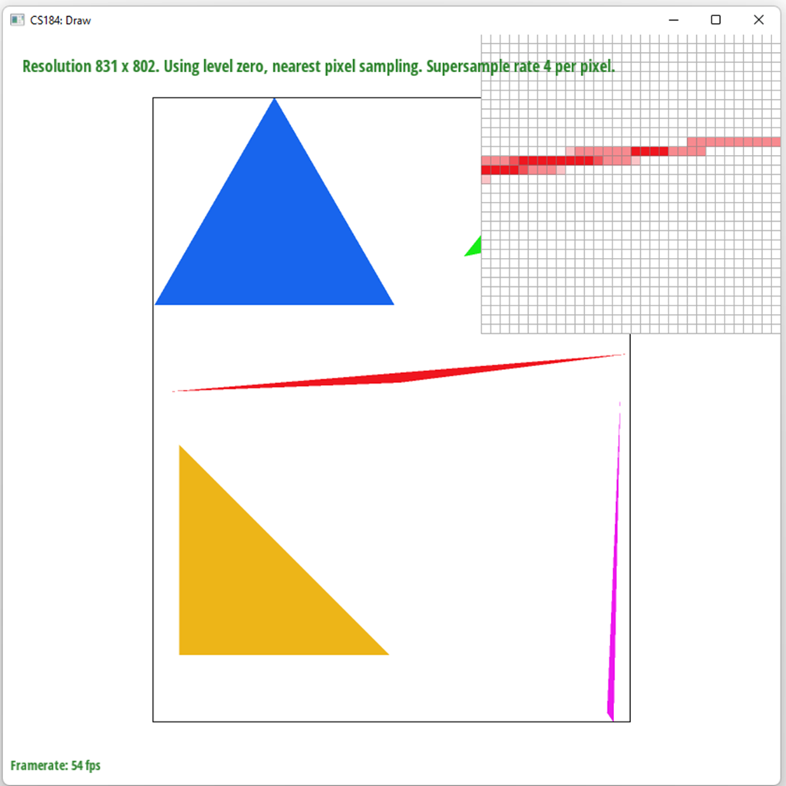
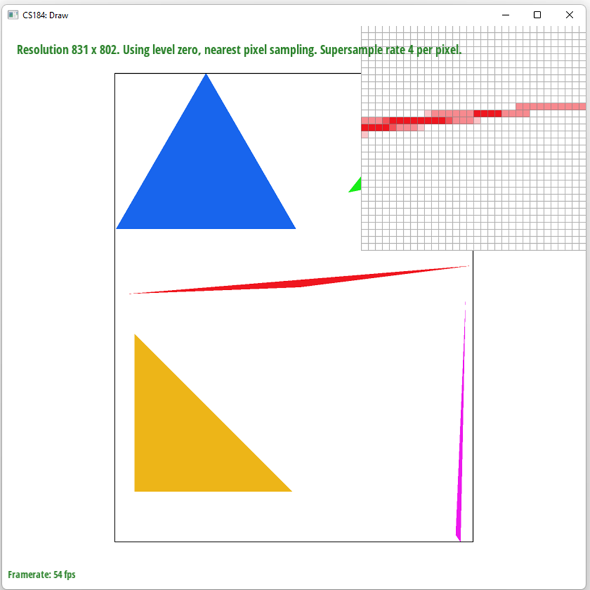
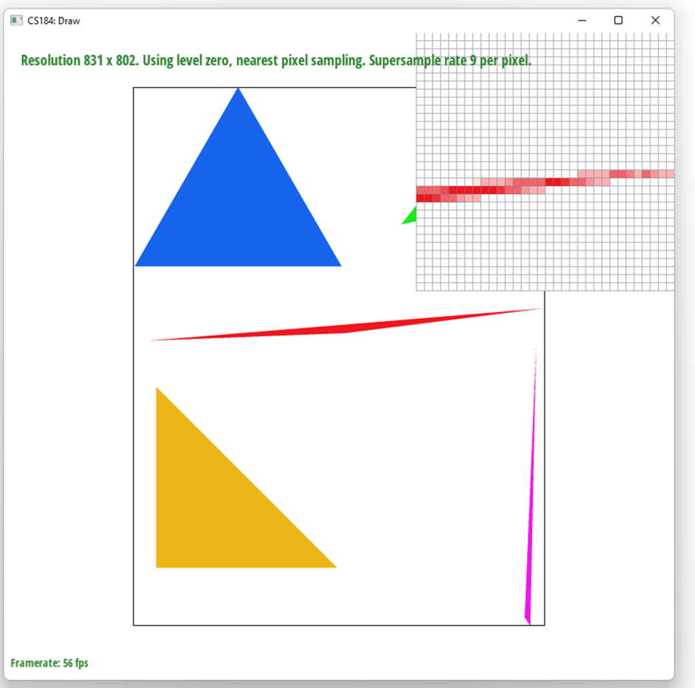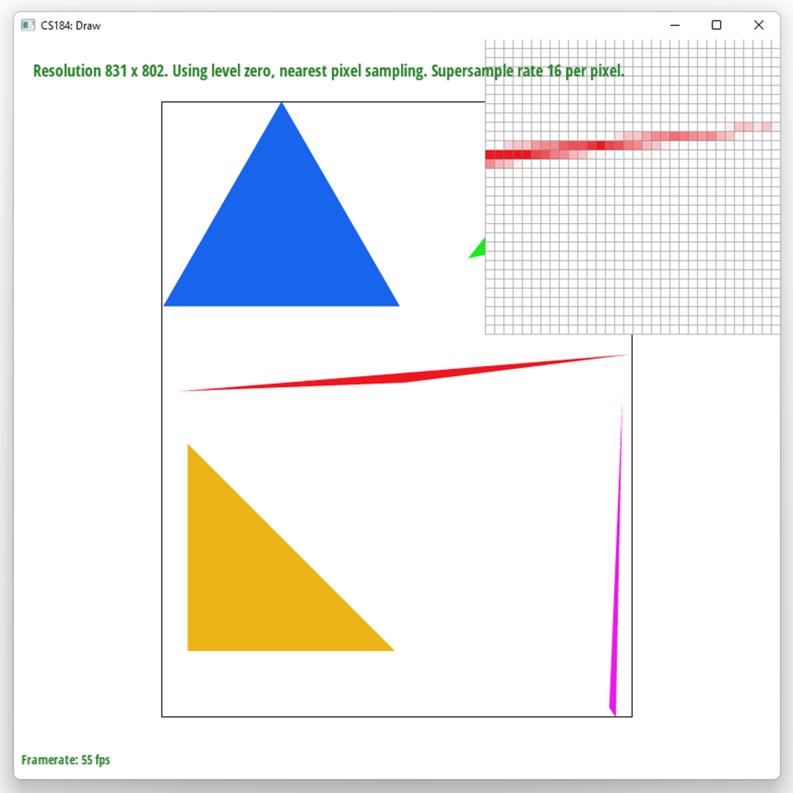
Task 3 Transforms
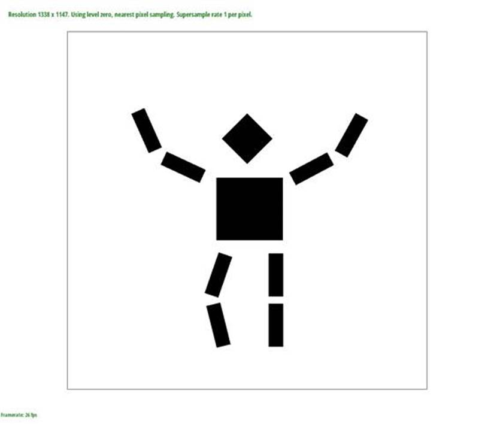
The cubeman is now waving and bent one of his legs. The
color changed from red to black. Both arms are rotated to create the “wave”
shape, and one of his legs is also transformed through rotation and
translation.
Task 4: Barycentric coordinates
Explain
barycentric coordinates in your own words and use an image to aid you in your
explanation.
Using
the relative weights of a triangle's vertices, barycentric coordinates can
interpolate a point within the triangle. In our scenario, the only information
we know about a triangle is the attributes and positions of each vertex.
Therefore, we must utilize barycentric coordinates to interpolate the
attributes of the three vertices for pixels inside the triangle.
Given
a vertex, if the interpolated point is farther from the vertex, the
corresponding weight is less. For instance, if a point is closer to the blue
vertex in the first figure below, the point is still mostly blue since it is
distant from the other two colors. Given a triangle with vertices A, B, and C
and the point P with coordinates (x,y), we can find out the weights by
taking inverse of the matrix 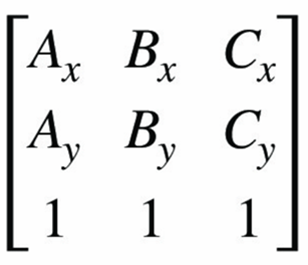 and multiplying it by point
P’s coordinates [x y 1].
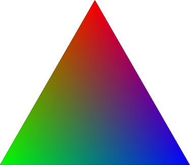
Source: https://boristhebrave.com/content/2018/05/barycentric_perlin/rgb_triangle.png
{kind=link}
Show a png screenshot of svg/basic/test7.svg with default
viewing parameters and sample rate 1.
Task 5: "Pixel sampling" for texture
mapping
● Explain
pixel sampling in your own words and describe how you implemented it to perform
texture mapping. Briefly discuss the two different pixel sampling methods,
nearest and bilinear.
When applying a texture to a 3D
object, pixel sampling is used to map the texture to the screen pixels of the
object's surface. In this process, we select the color value of specific pixels
on the texture map. To interpolate the uv coordinates of pixels within a
triangle, we use the xy and uv coordinates of three triangle vertices. By
applying a linear barycentric coordinate approach, we calculate the
interpolation of the uv coordinates of each pixel within the triangle.
The nearest pixel sampling method
selects the color value of the closest pixel in the texture map to the current
point being sampled. This method can lead to pixelation or blurriness when the
texture is enlarged. In my implementation of nearest pixel sampling, after I
Calculate the nearest integer pixel coordinates, then I mipmap[level].get_texel(uv.x * (width - 1), uv.y * (height - 1)) to
return the color at the nearest pixel.
Bilinear pixel sampling produces
smoother and more accurate results when the texture is enlarged or shrunk but
it also requires more computation than nearest sampling, which can impact
performance. In my implementation
of bilinear sampling, I sampled the colors of the texels at the four corners of
the bilinear interpolation square. First, I performed a horizontal LERP on the
four texels to reduce them to two vertical texels. Then, I performed a vertical
LERP on the these two vertical texels to obtain the final color value of the
given texture coordinates.
We did rasterize_textured_triangle
slightly different than Task 4. I created three uv coordinates vectors(uv0, uv1, uv2), then do the same thing
in Task 4 but changed to Vector2D = uv0 * alpha + uv1 * beta + uv2 * gamma;
Initialize SampleParams sp and set sp.lsm = lsm, sp.psm = psm.
relative differences:
At rate 1 with nearest sampling, the B
letter in the image look jaggy. After I used pixel inspector to increase the
rate to 16, the B letter shows less sharp edges but still not smooth enough.
Then, I apply bilinear sampling, as shown in the pictures, at rate 1, it does
look much more smoother than nearest sampling at rate 1. Then I increase the
rate to 16 with bilinear sampling, there is not much difference. The situation
when there will be a large difference between the two methods is when the image
does not have large areas of uniform color neither low detail. In this case,
bilinear sampling may be more appropriate because bilinear sampling is
preferred for resampling images with sharp edges and fine details. In addition,
when the image is zoom in, the blocky appearance produced by nearest sampling
becomes more visible because the distance between neighboring pixels is greater
when the image is magnified, so the gaps between the blocks are more apparent.
In contrast, bilinear sampling smooths out the color transition between pixels
by taking into account the values of the four nearest pixels, resulting in a
more continuous appearance that is less affected by magnification.
Nearest, rate 1
Bilinear rate 1
Nearest, rate 16
Bilinear rate 16
Task 6: "Level sampling"
with mipmaps for texture mapping
Explain level sampling
in your own words and describe how you implemented it for texture mapping.
Level sampling is a technique used in
computer graphics to improve rendering performance by reducing the amount of
texture data that needs to be processed. This is achieved by creating a set of
texture images at different resolutions, with lower resolutions used for images
that are magnified or minified on screen. When rendered texture is minified and
has very high frequency content, nearest or bilinear sampling methods is
insufficient because it can only average up to 8 texels. Thus, we need to use
mipmap to create a set of downsampled textures, then the texel values could be
pass be screen space pixel.
Implementation
First, we implements get_level and
sample helper functions.
For the get_level function, we
calculated the correct mimap level by using the formula log2(max(|| Δv_uv / Δx
||, || Δv_uv /Δy ||)). I Calculate the difference vectors sp.p_dx_uv - sp.p_uv
and sp.p_dy_uv - sp.p_uv. We perform barycentric interpolation. Then, We clamp
the level in between 0 and mipmap.size - 1 to avoid the issue of array out of
bound. For sample function, I perform lsm == p_nearest and lsm == p_linear for
each of the level sampling case.
Lastly, I calculate the uv barycentric
coordinates of (x,y), (x+1,y), and (x,y+1) in rasterize_textured_triangle
function.
Describe the tradeoffs
between speed, memory usage, and antialiasing power between the three various
techniques.
Increasing high supersampling rate can
also require more memory space.
Pixel sampling involves computing the
color of a single pixel by sampling a single point within that pixel. It is the
fastest method and uses the least amount of memory but can result in jagged
edges. Increasing the number of samples per pixel can help to smooth the edges
but also increases the rendering time and memory usage.
Level sampling involves using
different levels of detail of a texture map. It can reduce the number of
texture lookups and computations, leading to faster rendering and reduced
memory usage. However, it can result in a loss of detail and sharpness at close
distances and may require more memory to store multiple levels of detail.
The number of samples per pixel
technique involves computing the color of each pixel by sampling multiple
points within the pixel and averaging the results. It is a more accurate method
of antialiasing and produces smoother edges, but it requires more time and
memory to render than pixel sampling.
Level Zero, nearest Level
zero, bilinear
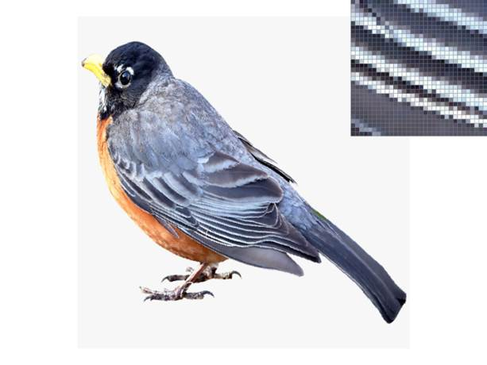
Nearest level, nearest pixel Nearest
level, bilinear pixel
 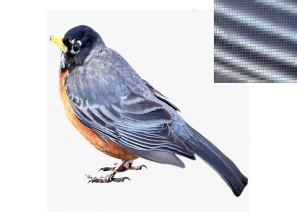
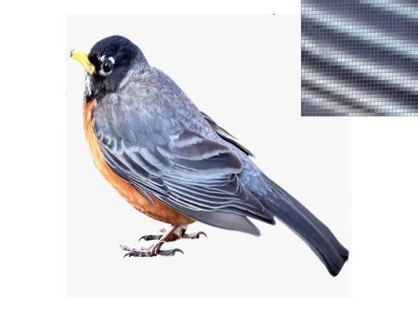
Bilinear level, nearest pixel Bilinear
level, bilinear pixel
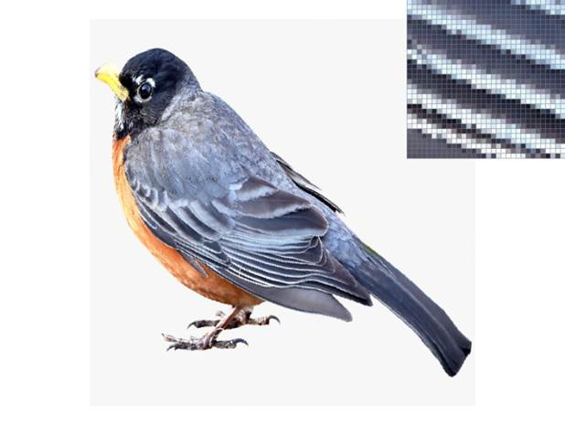